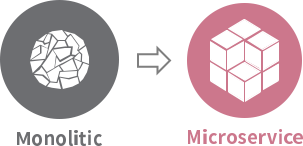

Service Mesh 란?

수년간 Enterprise IT환경은 급격하게 변하고 있습니다. 특히 Cloud로 대변되는 시스템 구축 환경의 변화에 따라 이를 잘 활용할 수 있는 다양한 Architecture들이 대두되고 있습니다.
Service Mesh Architecture는 MicroService Architecture와 더불어 최근 활발하게 언급되고 있습니다.
이번 포스팅에서는 Service Mesh Architecture가 ‘무엇’인지, ‘왜’ 활발하게 언급되고 있는지, Service Mesh Architecture ‘구현체’ 간단 소개와 ‘장단점’ 등을 알아보겠습니다.
Service Mesh 란?
Service Mesh는 모티브와 정의, 구현체의 기능 등 다양한 관점에서 용어를 정의하고 있습니다.
- MicroService Architecture를 적용한 시스템의 내부 통신이 Mesh 네트워크의 형태를 띄는 것에 빗대어 Service Mesh로 명명되었습니다.
- Service Mesh 는 서비스 간 통신을 추상화하여 안전하고, 빠르고, 신뢰할 수 있게 만드는 전용 InfraStructure Layer입니다.
추상화를 통해 복잡한 내부 네트워크를 제어하고, 추적하고, 내부 네트워크 관련 로직을 추가함으로써 안정성, 신뢰성, 탄력성, 표준화, 가시성, 보안성 등을 확보합니다. - Service Mesh 는 URL 경로, 호스트 헤더, API 버전 또는 기타 응용 프로그램 수준 규칙을 기반으로하는 계층 7 네트워크 Layer 입니다.
Service Mesh 의 구현체인 경량화 Proxy를 통해 다양한 Routing Rules, circuit breaker 등 공통기능을 설정할 수 있습니다. 이는 서비스 간 통신에 연관된 기능 뿐만 아니라, 서비스의 배포 전략에도 도움을 줍니다.
왜 Service Mesh 를 적용하는가?
Service Mesh 가 떠오르는 이유는 무엇일까요 ?
MicroService Architecture는 Monolitic Architecture의 단점 극복과 Cloud 환경에서 시스템을 운영할 때의 이점을 극대화하기 위해 많이 사용되고 있습니다.
이를 통해 많은 문제들이 해결되었지만, 또다른 문제점도 발생했습니다. 그것은 시스템의 런타임 복잡성 입니다.
Buoyant 블로그 중
전 세계적으로 가장 큰 마이크로 서비스 응용 프로그램 중 하나를 작업 한 결과, 마이크로 서비스는 마법의 확장이나 유연성, 보안 또는 신뢰성의 뿌리가 아니라는 점을 확신 할 수 있습니다. 모놀리식 제품보다 작동하기가 훨씬 어렵습니다.
구성 관리, 로그 처리, strace, tcpdump 등 우리가 익숙하고 익숙한 도구는 마이크로 서비스에 적용 할 때 조잡하고 둔한 도구임을 입증합니다.
한 번의 요청으로 수 백 개의 인스턴스가있는 수백 개의 서비스에 액세스 할 수있는 세상에서 tcpdump를 어디에서 실행할 수 있습니까? 어떤 로그를 읽습니까? 느린 경우 어떻게 그 이유를 알아낼 수 있습니까?
내가 뭔가를 바꾸고 싶을 때, 어떻게 이러한 변화가 안전하다는 것을 확신합니까?
MicroService Architecture를 도입시 복잡성이 증가하는 명백한 이유가 있습니다.

서비스 & Instance 의 증가
시스템의 규모에 따라 다르지만 활발히 운영되는 MSA 시스템에는 수십개의 MicroService가 분리되어 있고, 운영 환경에 수백 ~ 수천개의 서비스 Instance가 동작하고 있습니다.
PaaS, CaaS 등의 환경에서 각 서비스의 Instance는 스케일링되며 동적으로 뜨고 집니다. 이 수백 ~ 수천개의 Instance을 모니터링 하고 로깅을 처리하고 Instance를 관리해야 합니다.
서비스 간 통신
Monolitic Architecture에서 프로세스나 쓰레드 간 메모리 공유 등 서비스 Instance 내부에서 처리하던 기능들이 서비스 간 통신을 통해 처리됩니다.
보통 사람들은 네트워크를 레이턴시가 없고 무한대 대역폭에 항상 안정적인 idle 상태로 생각하지만, 현실은 그렇지 않습니다. 안정적이지 않은 내부 네트워크는 시스템의 신뢰성, 안정성을 보장할 수 없습니다.
동적으로 수많은 Instance가 뜨고/지고, 서비스 간 통신이 유발하는 이런 복잡한 상황에서 내부 네트워크를 안정적으로 다루기 위해 새로운 기능(또는 요구사항, 관리 point)들이 필요합니다.
Service Mesh 기능
아래 내용은 MicroService Architecture가 적용된 시스템의 새로운 요구사항입니다. 또한, Service Mesh의 기능이기도 합니다. Service Mesh는 MicroService Architecture를 보완하고 있기 때문입니다.
- Service Discovery
- Load Balancing
- Dynamic Request Routing
- Circuit Breaking
- Retry and Timeout
- TLS
- Distributed Tracing
- metrics 수집
- 기타 등등
Service Mesh 구현
Service Mesh Architecture의 구현은 보통 서비스의 앞단에 경량화 프록시를 사이드카 패턴으로 배치하여 서비스 간 통신을 제어하는 방법으로 구현합니다.
서비스 간 통신은 사이드카로 배치된 경량화 Proxy를 통해서 동작합니다. 이 경량화 Proxy에 Routing rules, retry, timeout 등을 설정하고 로직을 작성하여 공통 기능을 기본 어플리케이션에서 분리시킬 수 있습니다.
사이드카 패턴이란?
사이드카 패턴은 클라우드 디자인 패턴의 일종입니다.
기본 Application 외 필요한 추가 기능을 별도의 Application으로 구현하고 이를 동일한 프로세스 또는 컨테이너 내부에 배치하는 것입니다.
동일한 프로세스 또는 컨테이너에 배치된 사이드카 Application은 저장 공간, 네트워크 등의 리소스를 공유하며 모니터링, 로깅, 프록시 등의 동작을 합니다.
사이드카 패턴 사용은 몇가지 장점이 있습니다.
- 사이드카 Application은 기본 Application과 별도의 Application입니다.
- 기본 Application의 로직을 수정하지 않고도 추가 기능을 수행할 수 있습니다.
- 기본 Application을 polyglot 프로그래밍을 적용해 요구 사항에 최적화된 환경에서 개발을 진행할 수 있습니다.
- 사이드카 Application은 기본 Application과 리소스를 공유할 수 있습니다. 이를 통해 모니터링에 필요한 Metrics 수집, 프록시 동작 등을 수행할 수 있습니다.
현재 활발히 발전하고 있는 Service Mesh 구현체를 소개합니다.
- istio : Google, IBM, Lyft가 함께 기여하고 있는 오픈소스 Service Mesh 구현체입니다. kubernetes를 기본으로 지원합니다. Control Plane - Data Plane 구조로 동작합니다. Envoy를 기본 Proxy로 사용하지만 nginx나 linkerd 등으로 대체할 수 있다고 합니다. (istio 소개글)
- linkerd : Buoyant에서 기여하고 있는 오픈소스 Service Mesh 구현체입니다. Twitter의 Finagle을 운영하던 인물들이 주축이라고 합니다. Local, DC/OS, kubernetes, docker, AWS ECS 등 다양한 환경에 Service Mesh를 적용할 수 있습니다. Host(or Node) 당 linkerd 하나를 배포해서 동작하는 것을 기본으로 소개합니다. 이는 ‘전형적인 사이드카 패턴으로 배포하는 것’이 리소스를 많이 사용한다는 문제점에서 시작해 나름의 해법을 찾은 것으로 볼 수 있습니다. Buoyant에서 운영중인 blog를 참조하시면 다양한 사례를 기반으로 하는 컨텐츠를 확인할 수 있습니다.
- conduit : linkerd를 운영하고 있는 Buoyant에서 기여하고 있는 오픈소스 Service Mesh 구현체입니다. Control Plane - Data Plane 구조로 동작합니다. kubernetes에 최적화한다는 점에서 linkerd와 차이가 있습니다. 신규 프로젝트로 미성숙 단계로 보이지만 linkerd를 잘 운영하고 있다는 점에서 관심있게 보고 있습니다. istio 와 비교해서 확인하시면 흥미로울 것 같습니다.
SOA - ESB와 비교
분산 처리 환경에서 기존과는 다른 문제가 발생하고, 새로 발생한 문제를 해결 하기 위한 다양한 해법을 제시하는 것. 어디서 많이 들어본 내용입니다.
Service Oriented Architecture(SOA)는 비즈니스 로직에 집중하고 도메인 중심으로 서비스를 분화하는 등등, MicroService Architecture와 유사한 점이 많습니다. SOA는 분산처리 환경에서 발생하는 문제를 해결하기 위해 Enterprise Service Bus(ESB)를 도입했습니다. 분산 처리 환경에서의 문제를 기본 Application의 외부에서 해결하려고 한 점이 ESB와 Service Mesh의 유사한 점이라고 할 수 있습니다. 하지만 ESB는 중앙집중형으로 공통 기능의 비대화에 따른 문제를 제대로 해소하지 못했습니다. Service Mesh는 각 MicroService 앞단에 경량화 Proxy를 배치하는 방법으로 공통 기능 처리를 분산화했다는 점이 가장 큰 차이로 보입니다.
Cloud Native 문제 해결 History
지금까지 Service Mesh에 대해 간략히 알아봤습니다. 위의 내용에 Cloud Native의 문제 해결 History를 추가로 살펴봄으로써 Service Mesh의 이해도를 높여보겠습니다. (http://philcalcado.com/2017/08/03/pattern_service_mesh.html 참고)
- Application level에서 해결
- Application에 내부 네트워크 관련 로직을 구현해서 해결
- Application을 구현할 때마다 소스를 붙여넣어야하는 비용이 발생한다.
- 공통 기능을 라이브러리화
- 공통적으로 적용되는 기능을 라이브러리화해서 Application을 구현할 때마다 Import하는 방식이다. (ex. spring cloud)
- 라이브러리화는 Application의 언어,런타임에 종속성이 생기고, 각 Application마다 라이브러리를 Import하는 비용이 발생하는 등의 단점이 있다.
- 비즈니스 로직이 아닌 해당 라이브러리를 관리하고 고도화하기 위한 별도의 조직을 운영해야한다.
- 라이브러리를 가져다 쓰는 경우, 주도권이 우리에게 없다. 라이브러리 버전이 올라가면 Application을 수정하고 테스트 해야하는 부담을 가져야 한다.
- 비즈니스 로직에 집중하기 어렵게 해당 라이브러리의 기능 및 비중이 점점 비대해진다는 의미에서 fat-라이브러리라고 언급되기도 한다.
- 사이드카 패턴으로 경량화 Proxy와 연계
- 비즈니스 로직과 내부 네트워크 관련 로직을 분리한다. 하지만 MicroService Architecture에서 필요한 내부 네트워크 로직을 OS단의 Network Layer에 추가하는 것은 현실적으로 쉽지 않다.
- 해결책으로 별도의 사이드카 Application을 구현하고 기본 Application과 연계하여 서비스 간 통신을 수행한다. 이는 시스템에 공통 기능 추가를 자유롭게 한다.
- Service Mesh Architecture의 시작으로 data plane으로 언급되기도 한다.
- 분산된 기능의 관리를 중앙집중화
- kubernetes, Mesos 와 같은 정교한 런타임을 활용하면서 별도의 격리되어 동작하는 독립적인 Proxy들을 중앙에서 관리하기 시작한다. (개별 관리는 번거로움)
- control plane으로 언급된다.
- 개별 Proxy의 Routing Rules 관리 및 동적 동기화, metrics 수집 등의 기능을 합니다.
Service Mesh 장단점
- 장점
- 기능을 어플리케이션 외부에 구현하며 재사용 가능하다.
- MicroService Architecture를 도입하면서 발생한 런타임 복잡성 이슈를 해결한다.
- 어플리케이션 개발시 언어와 미들웨어 등에 종속성을 제거한다.
- 단점
- 시스템의 런타임 인스턴스 수가 크게 증가한다. (최소 2배수)
- 서비스 간 통신에 네트워크 레이어가 추가된다.
- 신기술이다. 구현체가 Release 될 때까지 시간이 필요하다.
Conclusion
Service Mesh Architecture는 MicroService Architecture가 유발하는 새로운 문제점을 보완하는 개념입니다. 경량화 Proxy를 통해 서비스 간 통신에 Routing Rules 설정, Circuit Breaker 등의 공통 기능을 적용합니다. 새롭게 떠오르는 키워드지만 그 속을 자세히 들여다보면 분산 처리 환경에서 네트워크를 안정적으로 다루기 위한 기술들의 발전 양상을 따르고 있습니다. Service Mesh를 도입해 MicroService Architecture가 적용된 시스템의 안정성, 가시성, 신뢰성, 표준화 등을 달성할 수 있습니다.
물론 만능은 아닙니다. 서비스 간 통신에 네트워크 레이어가 추가되므로 오버헤드가 발생하기도 하고, 사이드카 패턴으로 배포된 경량화 Proxy도 시스템의 리소스를 소모하는 Application입니다. 또한, 아직 오래되지 않은 기술로 Spring Cloud Netflix OSS 등의 유명하고 안정된 라이브러리와 비교해 기능이 충분치 않을 수도 있습니다. 하지만 Application의 수정없이 공통 기능을 추가할 수 있어 적용 부담이 적고, 시스템에 Polyglot 프로그래밍을 보장할 수 있는 등의 장점이 많이 있습니다.
Monolitic Architecture의 단점에 질려서, 혹은 시스템을 Cloud 환경에 구축할 때 얻을 수 있는 이점과 MicroService Architecture의 장점에 끌려서 MicroService Architecture의 도입을 결정했다면 그 다음 닥칠 문제에 대비해 Service Mesh Architecture 및 istio, linkerd, conduit 등을 유심히 지켜볼 필요가 있습니다. 특히 kubernetes 등 Service Mesh Architecture 구현체를 적용하기 쉬운 환경을 사용중이라면 바로 테스트해보는 것을 추천드립니다.